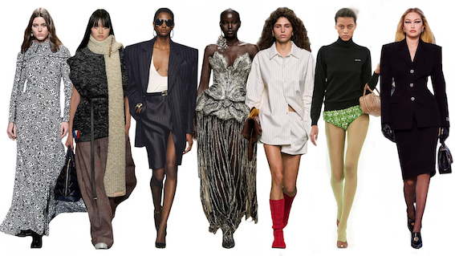
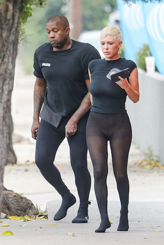
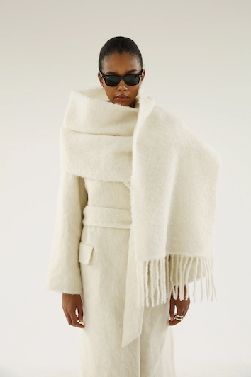
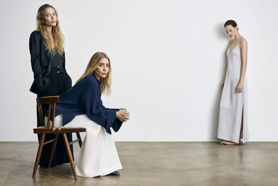
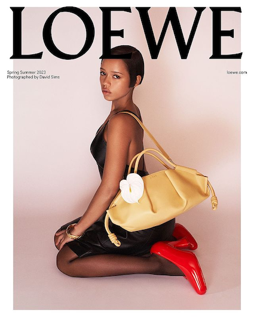
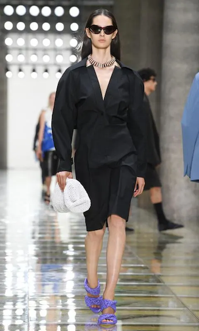

Ella Ollikainen & Elli Naukkarinen
Syksyn 2023 virallinen trendiraportti
Ensimmäinen trendi, jonka nostamme ovat sukkahousut. Trendi nousi suosituksi, kun Kanye Westin uusi vaimo Bianca Censori nähtiin pukeutuneen kokonaan sukkahousuista tehtyihin asuihin. Siitä lähtien sukkahousuja ollaan nähty katukuvassa neutraalien sävyjen lisäksi, myös rohkeimmissa väri valinnoissa. Sukkahousuja nähdään myös kuviollisina, mikä tuo asuun persoonallisuutta.
Joka syksy kaulahuivit ovat suosittu asuste tuomaan tyyliä ja lämpöä asuun. Tänä syksynä mitä isompi ja muhkeampi kaulahuivi, sen parempi! "Viltti huivit" muistuttavat isoa huopaa, johon hautaudutaan peiton tapaan. Tänä syksynä on lupa mennä ulos, kuin juuri sängystä heränneenä.
Syksyisin neutraaleja ja murrettuja sävyjä suositaan pukeutumisessa vuosittain. Lisäksi muutama uniikimpi väri nousee trendiväriksi kyseisen sesongin ajaksi.
Listasimme syksyn 2023 pukeutumisen suosituimmat sävyt:
Voimakas ruskea
Säväyttävä punainen
Herkkä luonnonvalkoinen
Neutraalit beigen sävyt
Syksyn 2023 muodin kuumimpia trendejä ovat huolettomuus, inhimillisyys ja arkisuus. Lontoon, Pariisin ja Milanon catwalkeilla on vilahdellut aivan tavallisen näköisiä mustia t-paitoja, sukkahousuja ja pelkistettyjä tiukkoja mustia takkeja. Vaatteet, joita todella voi käyttää, ovat tulossa. Nämä arkisen näköiset huippumuodikkaat ja kalliit vaatteet erottaa tavallisista kuitenkin laatu. Ne on toteutettu luokkansa parhaista kankaista. Seuraavia tämän hetken trendikkäimpiä vaatemerkkejä voidaan kuvailla myös lauseella "quiet luxury". Se viittaa merkin ajattomaan suunnitteluun, joissa merkin logo on usein huomaamaton.
Yksi kuuumimmista merkeistä tällä hetkellä on The Row. Ylellinen muotimerkki, jonka perustivat amerikkalaiset muotisuunnittelijasisaret Mary-Kate ja Ashley Olsen vuonna 2006. Nimi "The Row" viittaa siihen, että suunnittelijat haluavat korostaa huomion kiinnittämistä yksityiskohtiin ja huolelliseen työhön.
Row tunnetaan minimalistisesta ja ajattomasta muotoilustaan. Merkin vaatteet ovat usein puhdasta ja yksinkertaista linjaa, ja ne pyrkivät tarjoamaan laadukasta mukavuutta samalla kun säilytetään hienostunut tyyli. Vaatteet ovat usein hienostuneita ja neutraaleja värejä, ja niissä painottuu laatu, leikkaus ja materiaalien yksityiskohdat.
Toinen trendikäs merkki on nimeltään Loewe huippuluokan muotimerkki, joka tunnetaan laadukkaista nahkatuotteistaan ja ylellisestä muotoilustaan. Merkki perustettiin vuonna 1846 Madridissa ja se on yksi Espanjan vanhimmista muotitaloista.
Loewe on saanut mainetta erityisesti laadukkaista laukuistaan ja asusteistaan. Tärkein materiaali Loewen tuotteissa on usein nahka, ja brändi on tullut tunnetuksi erityisesti taitavasta nahkatyöstään. Loewen tuotteissa yhdistyy perinteinen käsityötaidot ja moderni muotoilu. Brändi on tunnettu myös omaperäisistä yksityiskohdista ja rohkeasta estetiikastaan, joka tekee siitä erottuvan muotimaailmassa.
Tulevana talvena kuumin laukku valinta on maxikokoinen clutch.
Jutun alkuun: Syksyn 2023 vaatetrendit